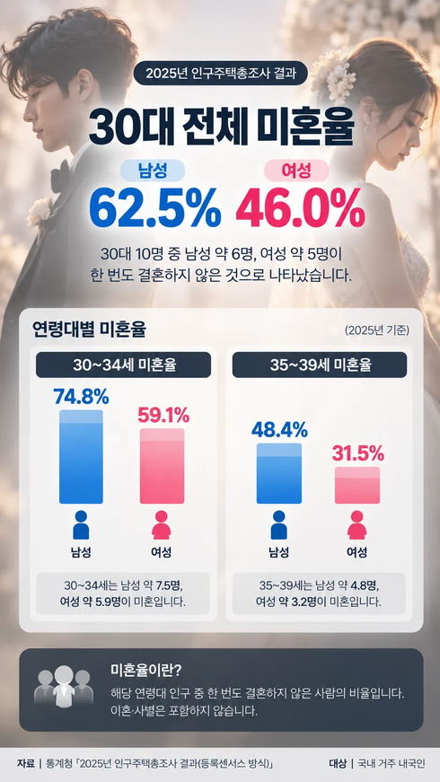

https://www.fmkorea.com/best/10450913008

남녀 모두 합쳐 평균 50% 이상
30대 후반으로 가면 남자 48.4% 여성 31.5%
https://www.fmkorea.com/best/10450913008

남녀 모두 합쳐 평균 50% 이상
30대 후반으로 가면 남자 48.4% 여성 31.5%
개드립에서 요즘 결혼 많이 하고 아기 많이 낳는다며?
또 구라였어??
태평성대임 ㅅㄱ
내주변도르는 다했음 ㅅㄱ
통계랑 기싸움할거임
출산율 오른거 맞음
아무리 올랐어도 1.0이하라 이대로 가면 나라 망하는것도 맞음
근데 잘나가던 걸그룹, 배우 이런 사람들도 40대임에도 결혼안하더라
아직 내주변도르는 다 결혼했다는 분들 안오셨네 이따가 다시 와야지
내 주변 아직 결혼 반도 못함
나도 한 30퍼되는듯
저아래 바로왔다야
이제는 선택이 아니라 필수인거같은데
그냥 서울 소재 기업 세금 500퍼 때려서 지방으로 다 쫒아내야할듯
지방사는거 아닌이상 서울경기는 잘못하다가 가족생각하면서 평생 집대출에 묶여야함 그러다가 가족 누구한명 아프면 ㅈ되는거
30대를 왜 만나냐고 병신한남들아
30대 임신공격당해서 결혼당하는거보면
존나 개멍청해보임
ㄹㅇㅋㅋ 유통기한 훨씬 지낫다
그런애들 이해하려고 하지말고
그냥 욕하고 놀리는게 맘 편하다
내 주변에는 결혼 안한사람이 드문데.... 참 신기하단 말야.
그나저나 옛날에 애 너무 많이 낳아서 둘만 낳자고 캠페인 했던것 처럼 AI 때문에 실업자 너무 많아져서 면적대비 인구 작은게 오히려 바람직한 세상이 곧 올지도?
근데 결국 내수시장 자제가 줄어들고 경제활동인구수 줄어들면 그거 고스란히 남은사람끼리 부담해야함. 소비경제 돌아갈 인구수가 엄청깡패임
ㅇㅇ 원래는 인구가 깡패고 인구 많은 나라가 부러웠는데...... ai랑 로봇이 인간을 거의 대체하고 실업자가 10억명인 중국 상상해봐라. 나라가 잘 돌아갈려나... 식량 생산 효율은 좋아질테고 대충 원룸같은데서 사료 같은거 배식받아서 살수는 있을테니 다들 하루종일 게임만 하고 살 것 같긴한데
놉 2040년~2050년 사이에 식량 생산량 최소 10%~20% 정도 감소할 것으로 과학자들이 추정중임, 이것도 기술로 커버한 결과임
해양생태계 붕괴로 단백질 공급원 육상으로 몰리는데 수요를 감당 못 할 정도로 환경이 망가지는 중, A급 토지들도 수명이 줄고 있음, 곡물 생산량 감소하면 육류도 비싸짐 괜히 곤충단백질, 배양육을 연구하는게 아님
식량은 곡물, 배양육 외에는 먹기 힘들어 질거고 신선한 야채는 존나 비싸고 진짜 고기 또한 부자들의 전유물이 될 거임
예측 가능한 미래는 곡물+배양육+식이섬유 캡슐+비타민 이걸 배급받는 사회로 갈 가능성이 큼
지금 같은 식량 풍요는 아예 불가능 함
우리의 풍요는 자식들이 못 누림..
그런 예측은 나도 옛날에 봤다만... 그거 예측한 애들중에 ai 발전속도와 메모리 수요 예측한애들 하나도 없잖아. 엄청난 변화가 있겠지만 예측한것과 아주 다르지 않을까 생각되네.
월드 모델은 1970년, 2014년 결과로 크게 논란이 났지 2040년 붕괴 결과 값이 안 변했어서
근데 2021년 결과도 안 변했고 지금도 계속 돌리는 중임
작년에는 ai변수를 넣고 시뮬레이션 돌림, 아이러니하게 붕괴가 더 빨라짐
Ai 기술 경쟁이, 기술의 특혜를 보기 전에 이미 더 빠르게 환경을 망치고 있었음
그리고 임계점 넘은 환경은 예전 처럼 똑같이 못 되돌림, 이거 극복 방법 결론이 다 하나였음
다 포기하고 누리지말기, 성장하지말고 분배해서 생존이나 도모하기
왜냐하면 니 주변에 결혼한 사람끼리만 보니깐 그런거임 생존자 편향이라고 있음
결혼은 양자가 하는건데 서로를 비난하는 꼴이 ㅈㄴ 우스움
그냥 존나 약해서 어른이 되기 두렵습니다 -> 이거 인정하면 세상이 무너짐?
기득권 노인네들이 열심히 갈라치기 해주시고
젊은이들한테 일자리건 부동산이건 양보할생각이 추호도 없으니 이렇게 되는거지
앞으로 미혼 젊은이 더 늘어날듯
내 주변 풍경이 달라지지 않은 것처럼 보이지만 결과가 저렇다는 건 사실일 거 아냐
그럼 내 주변 풍경이 아닌 곳의 30대들이 결혼을 못한 거겠지
집-회사 하거나 집-집인 사람들이 많은가봐
혼자할수있으면 했지
이혼,사별까지 합치면 솔로(+돌싱)도 꽤 많겠네
그것보다 사실혼이 더 많지 않을까싶음
30대 중후반이면 남자들도 거의 막차인데 미혼율이 48프로나되네; 요즘 출산율 반등했다더니 실제론 미혼율이 되게 높구나

결혼할 카리나닮은 여개붕이 연락주시오
35까지 결혼 안한 여자들 다 군대 입대 시켜라
국가에 뭐하나 기여를 못하네 ㅉㅉ
단순계산만해봐도 24대졸 26군대 27취업임 휴학 재수없다는 가정하에해도 27나이고 중간에 다른사유끼면 30금방임
취업하자마자 돈있는사람 아니고선 결혼비용도 부담일거고 쉽지않음
30대 후반 미혼율이 성별에 따라 17퍼나 차이나면, 그만큼의 남자가 40대에 결혼한다는 건가?
예전에도 20대랑 30대차이나긴했음
남자가 조금 늦는다는 인식이있어서
20후반30초반이다보니
여자보다 20대결혼률이 낮았지
혼인신고 안한사람 많지 않냐? 내주변엔 세금관련 때문에 정리하고 혼인신고 하려는사람 많던데
회사 동기 30대 10명중 10명 기혼
겜창 디코 크루 30대 12명중 1명 기혼
내주변도르 했을때
30대기준 서울,수도권,광역시 수준만 되어도
집안이 잘사는거, 부부 둘다 대기업 아니면 대부분 미혼
00시 급 만 되어도 90%결혼 했음
저 악성재고들은 누가 사갈려나 ㄷㄷ
요즘 주변에 20대후반 결혼 많더라
이미 집사서 결혼은 조졌단거 느끼고 일단 결혼해서 모으는 느낌인듯
대신 이미 조져버린 30대는 답이 없음